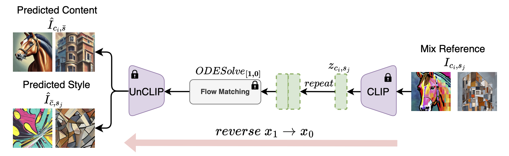
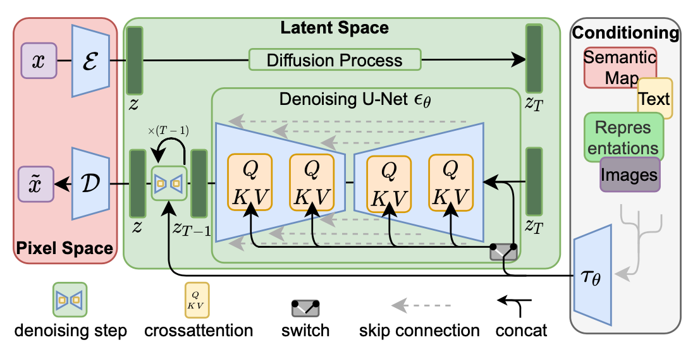
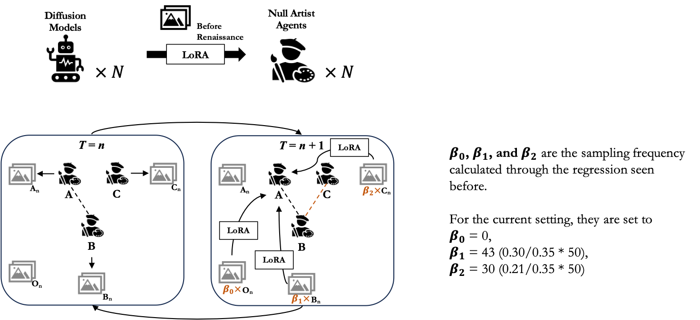
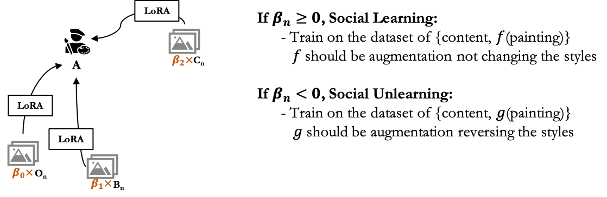
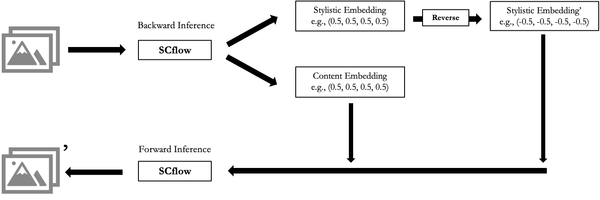
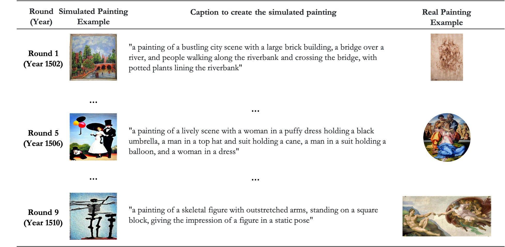

Roadmap
- What is Creativity, How to Measure it, and Why can(not) Machines Replicate it?
- A Multi-agent Framework for Machine Creativity
- Social interactionism and Sociology-of-art insights
- Diffusion models as agents
- Simulating the Stylistic Evolution of Painting from 1500 to 1510
- Next-Step Plans
What is creativity?
Human create artworks through a law of novelty (Martindale, 1990):
- Arousal Potential
- Habituation
-> Fluctuations in content and style
One way to understand creativity is through the stylistic shifts.
How to measure stylistic shifts?
SCFlow (Ma et al. 2025): Inference from images to their contents and styles

How to measure stylistic shifts?
Based on WikiArt-collected paintings from 1400 to 2024, we create a stylistic embedding space.
Why machines can(not) replicate human creativity?
Reliance on training data -> Bias, Uniformity, Atemporality, Disembodiment (Kozlowski & Evans, 2025)
Model Autophagy Disorder (Alemohammad et al., 2024)
Why machines can(not) replicate human creativity?
Reliance on training data -> Bias, Uniformity, Atemporality, Disembodiment (Kozlowski & Evans, 2025)
Model Autophagy Disorder (Alemohammad et al., 2024)
Yet,
Some digital artists have long tried to use the randomness in models (such as GANs) to create novel artworks.
Tech companies such as Adobe are developing AI tools to facilitate creation.
Why machines can(not) replicate human creativity?
A Multi-agent Framework for Machine Creativity
Social interactionism and Sociology-of-art traditions
Social interactions create shared meanings which aggregate to cultural symbols (Blumer, 1969; Goffman, 1959; Mead, 1934).
Later works on art world (Becker, 1982) emphasize the idea on artistic productions as collective invention.
-> Can we build a interaction-based multi-agent framework to facilitate machine creativity?
A Multi-agent Framework for Machine Creativity
Social interactionism and Sociology-of-art traditions
Based on WikiArt-collected paintings, we build a dataset of pairs of paintings, assigned the social interaction attributes between the artists who made them.

A Multi-agent Framework for Machine Creativity
Social interactionism and Sociology-of-art traditions
Based on WikiArt-collected paintings, we build a dataset of pairs of paintings, assigned the social interaction attributes between the artists who made them.

A Multi-agent Framework for Machine Creativity
Diffusion models as agents
Latent Diffusion Model Architecture (Rombach et al., 2022)

A Multi-agent Framework for Machine Creativity
Diffusion models as agents
Low-Rank Adaptation (LoRA, Hu et al., 2021)
\[h = W_0 x + \Delta W_x = W_0 x + BAx\]
Later used in diffusion models.
Targeting on the attention layers in UNet.
A Multi-agent Framework for Machine Creativity
Diffusion models as agents
“Generate - Perceive - Update” Agentic Society

*A Multi-agent Framework for Machine Creativity
Diffusion models as agents
By “Update”: we mean social learning & social unlearning
*A Multi-agent Framework for Machine Creativity
Diffusion models as agents
By “Update”: we mean social learning & social unlearning

*A Multi-agent Framework for Machine Creativity
Diffusion models as agents
A type of “unlearning” \(g\) augmentation

Simulating the Stylistic Evolution of Painting from 1500 to 1510
This is a pilot test on 17 key artists around high Renaissance period, within 10 rounds of training. Example: Michelangelo

Simulating the Stylistic Evolution of Painting from 1500 to 1510
We use SCflow to vectorize the simulated paintings back to the stylistic embedding space.
Simulating the Stylistic Evolution of Painting from 1500 to 1510
To validate whether the agentic framework is valid or not, we develop a evolution-based creativity (semi-)benchmark.
Training validation: within-vs-between comparison
Artist-level validation:
centroid differences in style between real and simulated artists
shift differences in style between real and simulated artists
Period-level validation:
centroid differences in style between real and simulated periods
shift differences in style between real and simulated periods
Simulating the Stylistic Evolution of Painting from 1500 to 1510
1. Training validation
We test whether each training process is valid, by comparing the similarities within one agent’s own creations to the ones between one and others.

Simulating the Stylistic Evolution of Painting from 1500 to 1510
2. Artist-level validation
We test whether the agents by their centroids show (a) similar styles (b) similar shifts in styles across rounds to the real history.

Simulating the Stylistic Evolution of Painting from 1500 to 1510
3. Period-level validation
- We test whether the overall styles among all artists in each round are similar to the style in the real history.

Simulating the Stylistic Evolution of Painting from 1500 to 1510
3. Period-level validation
- We test whether the overall style shifts of all artists across rounds are similar to the shifts in the real history.

Next-Step Plans
Implement social unlearning processes to decrease the chance of collapsing
Change to models with little painting knowledge
Complexify the framework by adding normative influence through geographical movement or educational influence
Beyond validation, modify the framework to do counterfactual analyses or create novelty outside human creativity
Next-Step Plans
I am working with James, Levin Brinkmann (@MPIB-CHM) on the counterfactual analysis idea
I will (?) begin working with Avi and Avery, under the supervision of James and Jason Salavon (@Department of Visual Arts), on machine creativity.
I will (?) begin refining the baseline agentic settings for the AI Agents class in collaboration with my other team members.
Always interested in new opportunities to collaborate!
Thanks for suggestions!
Yangyu Wang @ KLab
01/19/2026